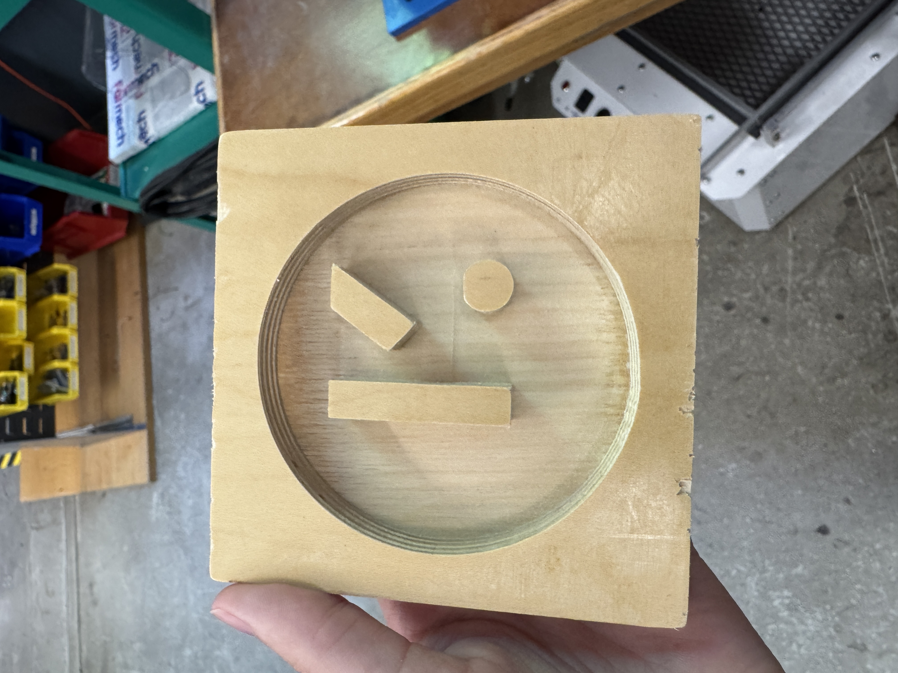
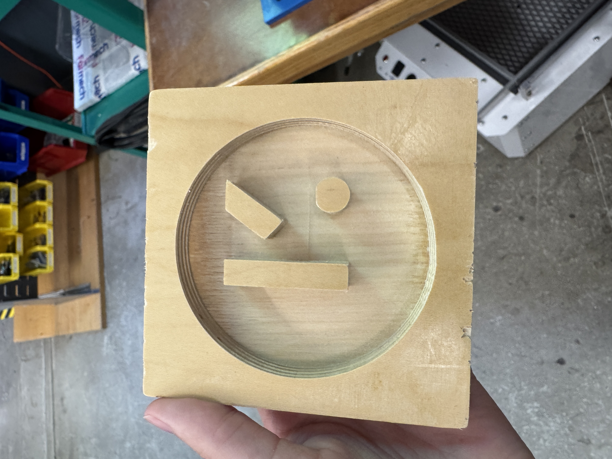

Week 08
My CNC Milling Project
For the CNC milling project, I wanted to return to my roots and create a coffee coaster with Kode With Klossy's logo.
Kode With Klossy is a non-profit dedicated to closing the gender gap in STEM, and they were the first to teach me how to code.
I created a coaster with their logo in Fusion before cutting it with the CNC mill. I forgot to keep part of it attached to the wood, so it
did start flying like crazy while being cut. Luckily, I was able to salvage it!
Download the DXF file here!
I then used the plastic shrink-wrap machine to create a mold instead of using the wood. I sanded the wood first to ensure that there were no
sharp or rough edges. I then used plaster to fill the mold. Attached below are photos of the process and the final product!
As you will unfortunately see, the mold has too thick of a plastic and too many edges to get the mold out successfully. I believe that I would likely
recreate the mold with a different material or use a thinner plastic!
 
